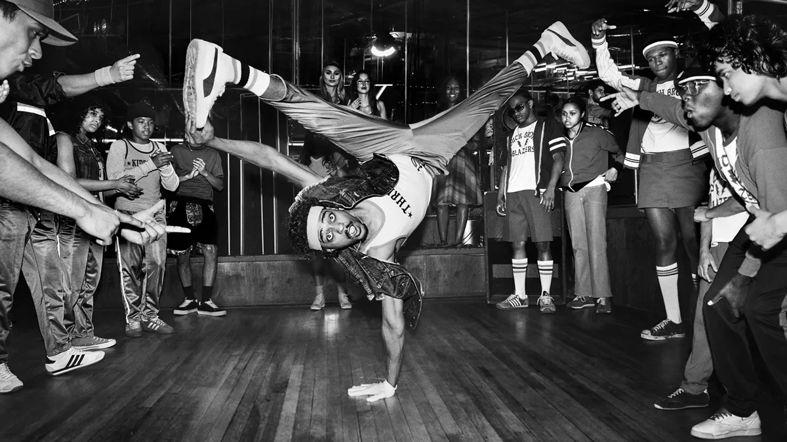

Why do teens love Hip-Hop?
Hip-hop dance is energetic, expressive, and full of rhythm. It allows teens to show creativity, release emotions, and improve physical strength while having fun.
What is breakdancing??
Breakdancing is a part of hip-hop culture. It includes acrobatic moves, spins on the floor, strong poses, and fast rhythm-based freestyle movements.

Main Dance Styles
- Breakdance
- Popping
- Locking
- Freestyle Hip-Hop
Benefits of Dancing
improves flexibility
strengthens coordination
reduces stress
boosts creativity
Info
If you'd like to learn more about hip-hop or breakdancing, go to this page: